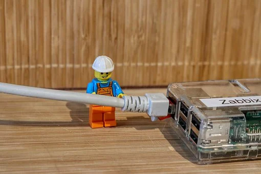
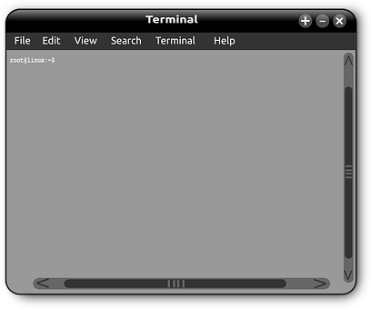

<div>
  <div class="container-fluid mb-3 " style="font-family: Railway,sans-serif;">
    <h2>Systemintegration</h2>

    <div class="row ">
      <div class="col-sm-12 col-md-3">
        <!--card one-->
        <div appSelectedItem class="card">
          
          <div class="card-body">

            <p class="card-text" style="font-weight: bolder">
              Netzwerktechnik
            </p>
            <p class="card-text">
              Als Netze oder Netzwerke werden Systeme bezeichnet, deren zugrundeliegende Struktur sich mathematisch als
              Graph modellieren lässt und die über Mechanismen zu ihrer Organisation verfügen. Hier im Schwerpunkt auf die
              IT
            </p>
            <a [routerLink]="['network-engineering']" appSelectedItem  class="btn btn-primary">auswählen</a>
          </div>
        </div>

        <div class="row-cols-md-4">
          <!--card two-->
          <div appSelectedItem class="card mt-3">
            
            <div class="card-body">

              <p class="card-text" style="font-weight: bolder">
                Server
              </p>
              <p class="card-text">
                Der Begriff Server (deutsch: Diener, Bediensteter, in weiterem Sinn auch Dienst) kann in der EDV sowohl
                für eine Software als auch für eine Hardware stehen. In beiden Fällen dient der Server als zentrale
                Schaltstelle innerhalb eines Netzwerks.
              </p>

              <a [routerLink]="['server']" appSelectedItem  class="btn btn-primary">auswählen</a>
            </div>
          </div>
        </div>

        <div class="row-cols-md-4 ">
          <!--card three-->
          <div appSelectedItem class="card mt-3">
            
            <div class="card-body">

              <p class="card-text" style="font-weight: bolder">IT-Sicherheit</p>
              <p class="card-text">
                Als Informationssicherheit bezeichnet man Eigenschaften von informationsverarbeitenden und -lagernden Systemen,
                die die Schutzziele Vertraulichkeit, Verfügbarkeit und Integrität sicherstellen.
              </p>

              <a [routerLink]="['safety']" appSelectedItem  class="btn btn-primary">
                auswählen
              </a>
            </div>
          </div>
        </div>

        <div class="row-cols-md-4 ">
          <!--card four-->
          <div appSelectedItem class="card mt-3">
            
            <div class="card-body">
              <h5 class="card-title" style="font-weight: bolder">
                Konsolenbefehle
              </h5>
              <p class="card-text">
                Bei der Befehlszeile (oft auch Konsole oder Terminal genannt) handelt es sich um ein textbasiertes Interface
                innerhalb des Betriebssystems. ... Der standardmäßige Command-Line-Interpreter bei Windows heißt CMD.
              </p>
              <a [routerLink]="['console']" appSelectedItem  class="btn btn-primary">auswählen</a>
            </div>
          </div>
        </div>
      </div>

      <div appSelectedItem class="col-sm-12 col-md-8 board " >
          <router-outlet></router-outlet>
      </div>
    </div>
  </div>
</div>
